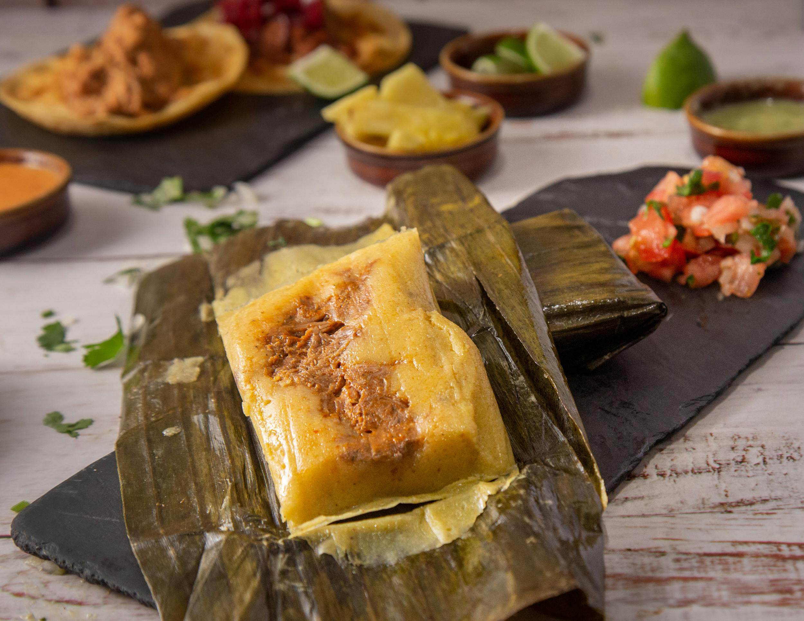

Tamale

Description
The tamale is a popular Mexican dish of seasoned meat that is wrapped in cormeal dough and steamed in corn husks.
It can be filled with other savory or sweet ingredients, herbs, and spices.
Ingredients
- Package dried corn husks
- Serrano peppers
- Clove garlic
- Yellow onion, diced
- Fresh cilantro leaves and tender stems
- Canola oil
- Cooked black beans
- Water
- Kosher salt
- Corn masa flour
- Baking powder
- Olive oil
- Mexican chile paste
Steps
- Soak the corn husks: Place the corn husks in a large pot and cover with hot water. Let sit until pliable. Meanwhile, prepare the filling and masa.
- Make the filling: Finely chop 2 serrano peppers (remove the seeds first if you want it less spicy) and 1 large garlic clove, and place both in a small bowl. Dice 1 small yellow onion and coarsely chop 1/2 cup cilantro.
- Heat: Heat 2 tablespoons canola oil in a large skillet over medium heat until shimmering. Add the onion and sauté until translucent. Add the serrano and garlic and sauté until the serrano turns bright green. Add the cilantro, 1 1/2 cups cooked black beans, and 1 cup water. Reduce the heat to medium-low and simmer until about half of the water has evaporated, about 10 minutes.
Remove from the heat. Use a potato masher and mash the bean mixture, keeping some of the beans whole. Taste and season with salt as needed. Cover to keep warm.
- Prepare the masa: Place 3 cups corn masa flour, 1 teaspoon baking powder, and 1 teaspoon salt in a large bowl and stir to combine. Drizzle in 1/4 cup olive oil and knead it in with your hands to combine. Add 2 3/4 cups water and 1 tablespoon chile paste and stir until the masa batter is evenly colored.
- Form and steam the tamales: Select 12 of the largest and most pliable corn husks. Pat dry with towels.
Fill a large tamale steamer with enough water to reach just under the rack where the tamales will sit. If you don't have a tamale steamer, place a wire rack in the bottom of a large pot with a tight-fitting lid, and add enough water to just come up to the rack.
Place 3 to 4 tablespoons of the masa in the center of a corn husk. Use the back of a large spoon to spread it evenly across the wide end of the husk, leaving about 1/2-inch border on both sides, but not the bottom. Place a line of the bean filling (3 to 4 tablespoons) down the center of the masa. Fold one side of masa over the filling until the two edges of the corn husk meet, and holding onto one side of corn husk, pull the other side toward the middle to press the two edges of masa together. Fold the pointy end of the corn husk up over the large end and place on a clean baking sheet.
- Repeat: Repeat with the remaining corn husks. Gently tie the tamales together in groups of 3 or 4 with kitchen twine. Bring the water in the steamer to a boil over medium heat. Place the tamales vertically, open-side up in the tamale steamer, keeping them snug in the pot so they don't unravel during cooking. Cover and reduce the heat to maintain a vigorous simmer. Steam the tamales, adding more water to the pot as needed, for 35 to 40 minutes.
- Remove: Remove from the heat and uncover. Let the tamales sit until firm and the masa pulls away from the husk easily before serving, about 15 minutes.
Reference to step-by-step instructions